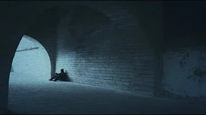
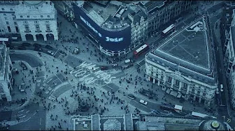
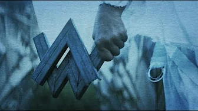

¡Hola! Soy Rodolfo
Mí tema que elegí es: El artista de musica electronica "alan walker".
Alan Walker
Alan Walker (Northampton, Inglaterra; 24 de agosto de 1997) es un DJ, remezclador y productor
discográfico noruego nacido en Northampton, Inglaterra. Es conocido por su sencillo «Faded» de 2015,
que fue certificado platino en catorce países. Tres de sus sencillos, Faded, «Alone» (2016) y
«The Spectre» (2017), han alcanzado más de mil millones de visualizaciones en YouTube.
También ha lanzado varias canciones reconocidas, incluyendo «Force» (2015), «Sing Me To Sleep» (2016)
, «All Falls Down» con Noah Cyrus,Digital Farm Animals (2017), «Darkside» (2018),
«Diamond Heart» (2018), «On My Way» con Sabrina Carpenter y Farruko (2019), y «Alone, Pt.
II» con Ava Max (2019).
A principios de 2017, el canal de Walker se convirtió en el canal de YouTube más suscrito registrado en Noruega,
con seis millones de suscriptores. A partir de julio de 2023, su canal sigue siendo el canal más suscrito en
Noruega, con 43,8 millones de suscriptores. También tiene la mayor cantidad de visitas de cualquier creador noruego,
con más de tres mil millones de visualizaciones.
Historia del artista
Alan Olav Walker nació el 24 de agosto de 1997 en Northampton (Reino Unido),hijo del británico Philip Alan Walker
y su esposa noruega Hilde Omdal Walker. Como resultado, se le concedió la doble ciudadanía tanto británica como noruega.
Alan, a los dos años de edad, se mudó a Bergen (Noruega) con su familia. Cuenta con dos hermanos: una hermana mayor,
Camilla, nacida en Reino Unido, y un hermano menor, Andreas, nacido en Noruega.
Más tarde, Alan encontró interés en las computadoras, un pasatiempo que lo ha llevado más profundamente al diseño
gráfico informático y la programación musical. Inicialmente no tenía antecedentes musicales, pero pudo aprender por sí
mismo viendo tutoriales de YouTube basados en la producción musical.
2012-2015: Inicios
En 2012,Alan estaba escuchando una canción del DJ David Whistle (también conocido como DJ Ness) y se acercó a él
para averiguar cómo producía su música. Se inspiró en los productores de EDM K-391 y Ahrix, y en compositores de cine
como Hans Zimmer y Steve Jablonsky. Comenzó a producir su música en su computadora portátil usando FL Studio . En
julio de 2012, con la ayuda y los comentarios de sus fanáticos en línea, comenzó a seguir su carrera de productor
musical y poco a poco comenzó a publicar su música en YouTube y SoundCloud. Comenzando como productor de dormitorio,
fue mejor conocido como DJ Walkzz antes de firmar un contrato discográfico y lanzar su sencillo debut en 2014.
En 2014, compuso «Faded», canción que subió a su canal de YouTube y llamó la atención de algunas personas,
entre ellas del sello discográfico NoCopyrightSounds (NCS), con el que firmó un contrato. NoCopyrightSounds
lanzó «Fade» en su canal de YouTube el 3 de noviembre de 2014, consiguiendo un gran éxito y recibiendo más de 400
millones de reproducciones en poco tiempo. Luego, le siguieron las canciones «Spectre» y «Force» en 2015
Imagen artística
Alan Walker fue originalmente conocido como DJ Walkzz, o simplemente Walkzz, cuando estaba comenzando. Terminó usando su
nombre real, Alan Walker, como su nombre de artista después de registrarse con un sello discográfico. Diseñó su
logotipo en 2013, un símbolo que consiste en las letras A y W entrelazadas, que son las iniciales de su nombre.
Él usa una sudadera con capucha y una máscara facial cuando actúa en el escenario. Cuando se le preguntó por qué
utilizaba una máscara durante una entrevista con NRK, dijo: Es para pasar desapercibido y mantener la imagen mental
que me han dado. Creo que es bastante chulo. Un pequeño giro que hace que la gente se pregunte quién es realmente la
persona que está detrás de Alan Walker. En un episodio de su serie Unmasked, declaró: La máscara es más es más bien
un signo y un símbolo de unidad y de parecerse a los demás, más que de ser yo diferente.
Número de reproducciones de sus canciones más conocidas
| Canción |
Numero de reproducciones |
Imagen de portada |
| Faded |
3,538,444,361 |
 |
| Alone |
1,348,320,126 |
 |
| The spectre |
1,122,103,1521 |
 |
| Darkside |
708,540,237 |
 |
| Sing me to Sleep |
705,909,046 |
 |